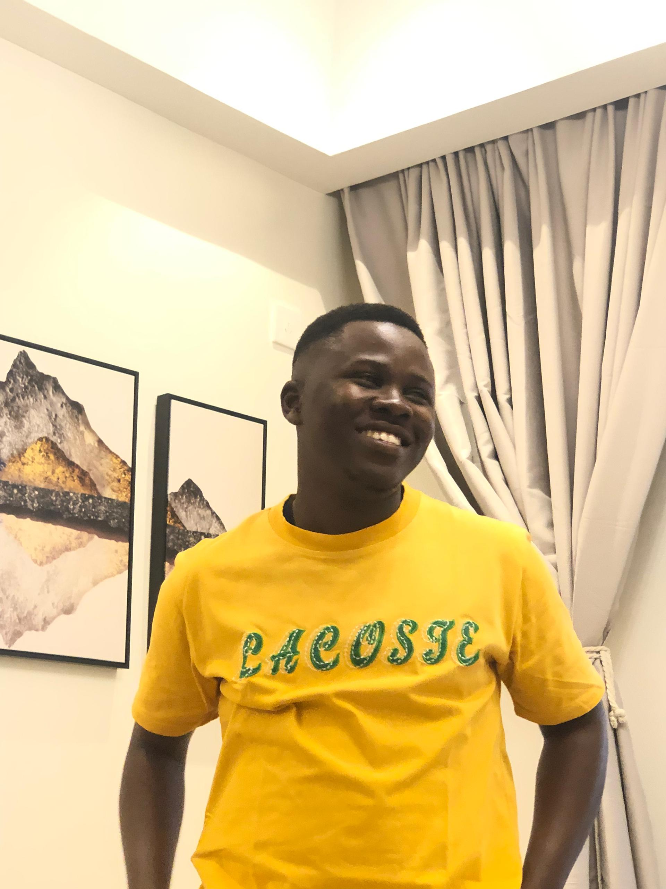

MSc in Engineering AI • Carnegie Mellon University Africa
Mastercard Foundation Scholar • President, CMU-Africa Research Club
I am a Master’s student in Engineering AI at Carnegie Mellon University Africa and a Mastercard Foundation Scholar. As a research assistant in Prof. Prasenjit Mitra’s Spatial and Language Technologies Lab, I investigate how AI can better understand and interact with humans. My work spans human-AI interaction, socially aware and multimodal AI, humor generation and detection, and AI applications for mental health, with the goal of creating intelligent systems that are both effective and socially responsible.
Autonomous agent for business process automation using Google Forms/Sheets, LangChain, and FastAPI. Integrated email notifications and QA monitoring dashboard.
RAG-based conversational assistant accessible via Slack, email, and web. Supports secure internal document retrieval for employee queries.
Context-aware RAG chatbot for urban navigation using Neo4j graph database and Llama. Ensures safe, hallucination-free responses for smart city services.
Attended Cohere Connect Conference (Nov 2025)
Paper accepted for Oral Presentation (Nov 2025)
Started at Spatial and Language Technologies Lab (Aug 2025)
Research Focus: Socially Aware AI • Grounded & Multimodal Reasoning • Human-AI Interaction
I'm applying to PhD programs to advance research in socially intelligent AI that communicates with social awareness, reasons across modalities, and generalizes beyond linguistic boundaries—moving toward AI systems that think and collaborate more like humans.